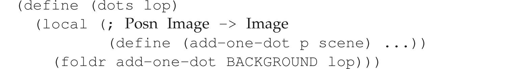
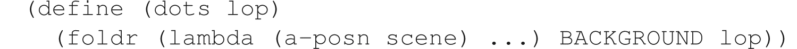
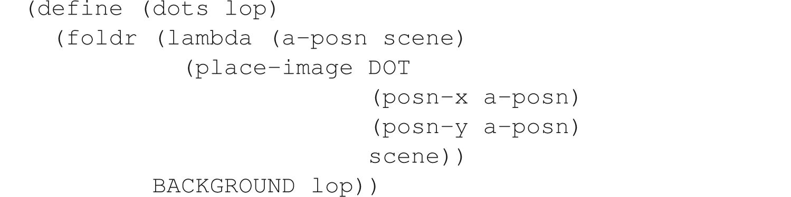
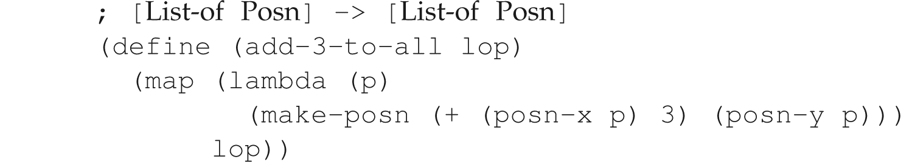
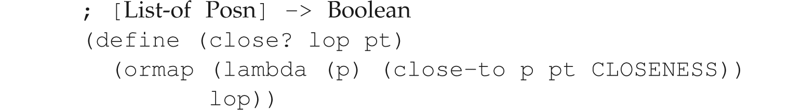

17.3 Abstracting with lambda
Although it may take you a while to get used to lambda notation, you’ll soon notice that lambda makes short functions much more readable than local definitions. Indeed, you will find that you can adapt step 4 of the design recipe from chapter 16.6 to use lambda instead of local. Consider the running example from that section. Its template based on local is this:

If you spell out the parameters so that their names include signatures, you can easily pack all the information from local into a single lambda:

From here, you should be able to complete the definition as well as you did from the original template:

Let’s illustrate lambda with some more examples from chapter 16.5:
• the purpose of the first function is to add 3 to each x-coordinate on a given list of Posns:

Because map expects a function of one argument, we clearly want (lambda (p)…). The function then deconstructs p, adds 3 to the x-coordinate, and repackages the data into a Posn.
• the second one eliminates Posns whose y-coordinate is above 100:
; [List-of Posn] -> [List-of Posn]
(define (keep-good lop)
(filter (lambda (p) (<= (posn-y p) 100)) lop))
Here we know that filter needs a function of one argument that produces a Boolean. First, the lambda function extracts the y-coordinate from the Posn to which filter applies the function. Second, it checks whether it is less than or equal to 100, the desired limit.
• and the third one determines whether any Posn on lop is close to some given point:

Like the preceding two examples, ormap is a function that expects a function of one argument and applies this functional argument to every item on the given list. If any result is #true, ormap returns #true, too; if all results are #false, ormap produces #false.
It is best to compare the definitions from chapter 16.5 and the definitions above side by side. When you do so, you should notice how easy the transition from local to lambda is and how concise the lambda version is in comparison to the local version. Thus, if you are ever in doubt, design with local first and then convert this tested version into one that uses lambda. Keep in mind, however, that lambda is not a cure-all. The locally defined function comes with a name that explains its purpose, and, if it is long, the use of an abstraction with a named function is much easier to understand than one with a large lambda.
The following exercises request that you solve the problems from chapter 16.7 with lambda in ISL+.
Exercise 285. Use map to define the function convert-euro, which converts a list of US$ amounts into a list of € amounts based on an exchange rate of US$1.06 per €.
Also use map to define convertFC, which converts a list of Fahrenheit measurements to a list of Celsius measurements.
Finally, try your hand at translate, a function that translates a list of Posns into a list of lists of pairs of numbers. 
Exercise 286. An inventory record specifies the name of an inventory item, a description, the acquisition price, and the recommended sales price.
Define a function that sorts a list of inventory records by the difference between the two prices.
Exercise 287. Use filter to define eliminate-exp. The function consumes a number, ua, and a list of inventory records (containing name and price), and it produces a list of all those structures whose acquisition price is below ua.
Then use filter to define recall, which consumes the name of an inventory item, called ty, and a list of inventory records and which produces a list of inventory records that do not use the name ty.
In addition, define selection, which consumes two lists of names and selects all those from the second one that are also on the first.
Exercise 288. Use build-list and lambda to define a function that
1. creates the list (list 0 … (- n 1)) for any natural number n;
2. creates the list (list 1 … n) for any natural number n;
3. creates the list (list 1 1/2 … 1/n) for any natural number n;
4. creates the list of the first n even numbers; and
5. creates a diagonal square of 0s and 1s; see exercise 262.
Also define tabulate with lambda.
Exercise 289. Use ormap to define find-name. The function consumes a name and a list of names. It determines whether any of the names on the latter are equal to or an extension of the former.
With andmap you can define a function that checks all names on a list of names that start with the letter "a".
Should you use ormap or andmap to define a function that ensures that no name on some list exceeds some given width?
Exercise 290. Recall that the append function in ISL concatenates the items of two lists or, equivalently, replaces '() at the end of the first list with the second list:
(equal? (append (list 1 2 3) (list 4 5 6 7 8))
(list 1 2 3 4 5 6 7 8))
Use foldr to define append-from-fold. What happens if you replace foldr with foldl?
Now use one of the fold functions to define functions that compute the sum and the product, respectively, of a list of numbers.
With one of the fold functions, you can define a function that horizontally composes a list of Images. Hints (1) Look up beside and empty-image. Can you use the other fold function? Also define a function that stacks a list of images vertically. (2) Check for above in the libraries.
Exercise 291. The fold functions are so powerful that you can define almost any list-processing functions with them. Use fold to define map-via-fold, which simulates map.